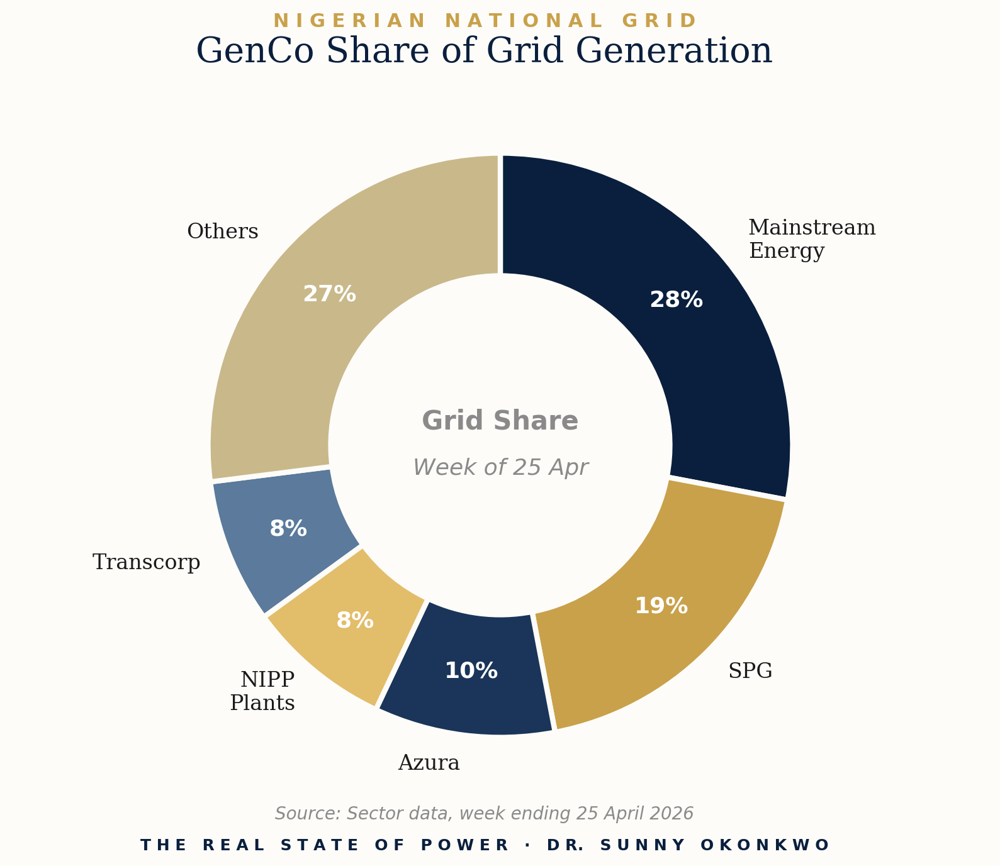

Before the Numbers
Nigeria woke up on April 30 without a Power Minister for the first time in three years. Adebayo Adelabu submitted his resignation on April 22, effective today, to pursue a governorship ambition in Oyo State. A chartered accountant who arrived at the ministry in 2023 with no power sector background is heading back to electoral politics, leaving behind a sector still searching for its footing.
I will not be unkind about his tenure. Some things moved. Market revenues grew from roughly N1 trillion in 2023 to N2.3 trillion in 2025. Tariff adjustments were implemented. The N4 trillion debt restructuring programme was initiated. These are real numbers and they belong on the record.
But the lights are still not on. And that is the only number that matters to the 200 million Nigerians who were promised something different three years ago.
This is Edition One of The Real State of Power. Every first Monday of the month, this report will publish the data, the analysis, and the straight thinking that the sector's official communications rarely offer. No managed narratives. No political softening. Just the ground truth from someone who lives inside this industry every day.
Section 1: The Month in Numbers
Generation closed the week ending April 25 in a marginal downward slide of less than one percent, hitting a peak of 4,812 MW and an average of 4,167 MW. That average tells you everything about where Nigeria sits in 2026. We are operating the national grid at roughly thirty percent of installed capacity on a typical day.
The week's gains and losses inside the generation pool are worth naming directly. Delta, Egbin, and Okpai together added 173 MW driven by improved availability. On the other side of the ledger, Omotosho, Ihovbor, and Afam VI lost a combined 238 MW, each plant constrained by the same chronic problem that has dogged Nigeria's thermal fleet for a decade: gas supply.

Read those numbers slowly. Mainstream alone is delivering more than a quarter of Nigeria's grid power. When a single GenCo carries that much weight on its shoulders, the system is not diversified. It is concentrated. And concentration in any energy system is fragility wearing the clothes of efficiency.
NERC also published 2025 power sector safety data this month. The number is grim. One hundred and ninety two electricity workers and third parties were killed or injured in power-related incidents across Nigeria in 2025. The 2024 figure was worse at 207 casualties. Distribution companies were identified as the primary driver of these incidents, with Eko Electric and Kano Electric topping the casualty list.
Nearly two hundred lives lost or damaged in a single year. By an industry whose work is supposed to be powering homes and businesses. That is not an acceptable casualty rate for any sector in any country.
Section 2: What Actually Happened This Month
April was a month of departures and decisions. Four developments stand out and each tells a different part of the same story.
Lagos Signs the 60 MW Deal. Lagos State Government signed a 60 MW Power Purchase Agreement this month with Mainland Power, Fenchurch Power, and Viathan Engineering, structured to scale to between 200 MW and 400 MW in coming years. The most important feature of this agreement is buried in the contract design. Payments are tied strictly to actual metered electricity supplied. Not capacity scheduled. Not power promised. Power delivered and measured.
That structural choice is a quiet revolution. Nigeria's national power sector has been bleeding money for two decades partly because take-or-pay clauses and deemed energy provisions force payment for electricity that was never produced or never consumed. Lagos has scrapped that model in its sub-national market. Pay for what is delivered. Nothing more.
The Power Minister Resigns. Adelabu's exit letter contained one substantive policy proposal worth examining. He recommended the creation of a Coordinating Minister for Energy to harmonise policy across electricity, gas, water resources, and environmental management. He is right about the diagnosis. The question his proposal leaves unanswered is why this conversation took until his resignation letter to surface.
The NRS Walks Away From the Grid. Perhaps the most quietly devastating development of the month. The Nigerian Revenue Service exited the national electricity grid this month, securing approval for a 6.08 MW captive power plant at its Abuja headquarters. A federal agency. Walking away from the federal grid. Choosing self-generation over public supply.
This is not a neutral administrative decision. It is a vote of no confidence by one arm of government in another arm of the same government's ability to keep the lights on.
Section 3: The Systemic Read
Lagos State Commissioner for Energy Biodun Ogunleye said something in April that should be quoted in every power sector strategy document being written in Nigeria right now. The state, he said, is moving beyond a single point of failure.
That phrase is the most important sentence said publicly about Nigerian electricity in 2026. It captures in seven words what the previous decade of policy failed to articulate. The national grid is not just inadequate. It is structurally a single point of failure for an economy of 200 million people. Building national prosperity on that foundation is engineering malpractice at the country level.
Lagos walking away from the grid is significant. The Nigerian Revenue Service walking away from the grid is generationally important. Federal agencies leaving the public electricity system means the Nigerian state itself has now publicly accepted that the public grid cannot be relied on for critical operations. That admission, made through a procurement decision rather than a press release, says more than any ministerial pledge could.
Section 4: What Needs to Change
President Tinubu must appoint a technocrat to the power ministry this week. Not a banker who will learn on the job. Not a political ally being rewarded for loyalty. Someone with deep sector grounding and a mandate that extends beyond the 2027 election cycle.
Lagos must be allowed and supported to lead. The 60 MW Power Purchase Agreement structure, with payment tied to metered delivery, should be studied closely by every state setting up an electricity market. The federal government's role at this point is to fund the regulatory capacity of state electricity agencies, fast-track licensing of embedded generators across all states, and stop treating sub-national power markets as a competitive threat to NBET.
Safety must move from a reporting line to a licensing condition. NERC has the data. NERC has the regulatory authority. What it needs is the political backing to use both.
Section 5: One Number That Matters
That is the average megawatts Nigeria's national grid delivered in the final week of April 2026. Against demand exceeding 30,000 MW. Against installed capacity above 13,000 MW. Against three years of reform, two ministerial tenures, a N4 trillion debt restructuring, and uncountable strategy documents.
Four thousand one hundred and sixty seven.
The Nigerian Revenue Service looked at that number and decided to build its own power plant. Lagos State looked at that number and went to court for the right to build its own market. Industries across the country looked at that number a decade ago and built 19 GW of private generators.
Everyone who looks at that number long enough makes the same decision. They stop waiting.
The next Power Minister will be judged on one question. Can they change the number? Everything else is commentary.